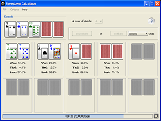

Showdown Calculator

The Showdown Calculator is a powerful tool for calculating the
chances of a hand winning, tying, or losing at the showdown.
Clicking on any of the red card-backs will bring up a card chooser.
Any cards that are left unspecified (shown as a card-back rather
than a specific card image) represent any random available card.
Cards can be loaded from games in progress by choosing
Load Current Hand or Load Hand
and Opponent Hands from the Options menu.
Once the scenario has been entered, there are two methods of
performing the calculation: Enumeration and Simulation.
Enumeration
You should use Enumeration only when you have a small number of random
cards in your scenario and you would like an exact result. Enumeration
will calculate the winner of every possible card combination and display
exact numbers. This is practical only with a small number of random cards,
as the number of card combinations and thus the length of time to
calculate grows exponentially with each one. Enumerations are
typically used with 6 or fewer random cards.
Simulation
Simulations are a fast alternative to enumeration since they are not
affected by the number of random cards. Using Monte Carlo sampling,
the simulation quickly converges to a very good approximation of the
relative values. The more trials used, the more accurate the approximation
becomes. Simulations are typically used with 7 or more random cards.
When running a simulation, you can stop at any time. Once the numbers
appear to have stabilized, finishing the trials will have only a minor
effect on the accuracy.
Examples
There are numerous questions the Showdown Calculator can be used to
answer. For instance, you may want to know how often Ah-Kh beats Jc-Js.
Simply set the number of hands to 2, set the two hands to the appropriate cards,
and click Enumerate. Within a few seconds, it will show that the pocket
Jacks are a 53.7% favorite to win. In this case enumeration is used since
the 5 board cards are the only random cards.
Now perhaps you want to know what your pre-flop chances are with pocket Jacks,
when you are up against 5 other players. Set the number of players to 6,
enter Jc-Js into the first hand, and leave the rest wild. In this case we
use Simulate since there are 15 random cards. You will find that
Jacks will hold up about 33% of the time.
Now compare what happens to your Jacks when you simulate an Ace-high
flop such as Ad-2c-7h. Next, compare this to a flop such as Td-2c-7h
where your Jacks are an over pair.
Note
When using the showdown calculator, keep in mind that wildcards are
taken from a uniform distribution. That is, all possible
combinations are equally likely. The calculator does not attempt to
model what hands your opponents are likely to be holding. In
addition, it gives you the final winning percentage assuming all
hands have stayed to the showdown.